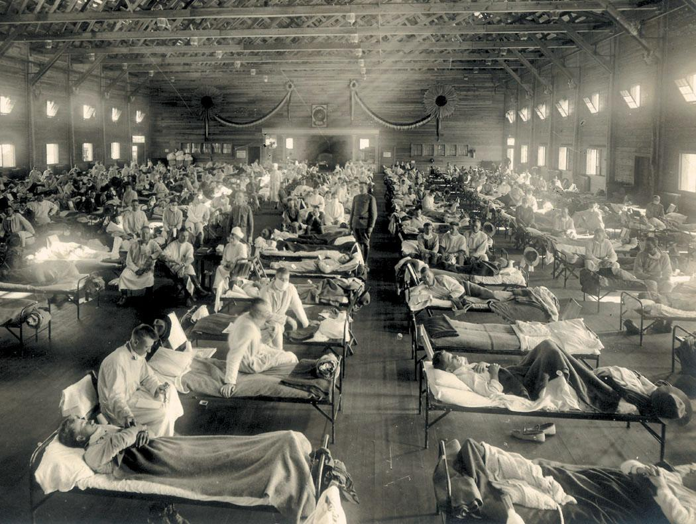

| 15 | Processes of Evolution |
|
KEY CONCEPTS
15.1Evolution Is Both Factual and the Basis of Broader Theory 15.2Mutation, Selection, Gene Flow, Genetic Drift, and Nonrandom Mating Result in Evolution 15.3Evolution Can Be Measured by Changes in Allele Frequencies 15.4Selection Can Be Stabilizing, Directional, or Disruptive 15.5Genomes Reveal Both Neutral and Selective Processes of Evolution 15.6Recombination, Lateral Gene Transfer, and Gene Duplication Can Result in New Features 15.7Evolutionary Theory Has Practical Applications |

Flu victims are treated at a U.S. Army hospital in 1918.
|
On November 11, 1918, an armistice agreement signed in France signaled the end of World War I. But the death toll from four years of war was soon surpassed by the casualties of a massive influenza epidemic that began in the spring of 1918 among soldiers in a U.S. Army barracks. Over the next 18 months, this particular strain of flu virus spread across the globe, killing more than 50 million people worldwide—more than twice the number of World War I–related combat deaths.
The 1918–1919 pandemic was noteworthy because the death rate among young adults—who are usually less likely to die from influenza than are the elderly or the very young—was 20 times higher than in flu epidemics before or since. Why was that particular virus so deadly, especially to typically hardy individuals? The 1918 flu strain triggered an especially intense reaction in the human immune system. This overreaction meant that people with strong immune systems were likely to be more severely affected.
In most cases, however, our immune system helps us fight viruses; this response is the basis of vaccination. Since 1945, programs to administer flu vaccines have helped keep the number and severity of influenza outbreaks in check. Last year’s vaccine, however, will probably not be effective against this year’s virus. New strains of flu virus are evolving continuously, ensuring genetic variation in the population. If these viruses did not evolve, we would become resistant to them and annual vaccination would become unnecessary. But because the viruses do evolve, biologists must develop a new and different flu vaccine each year.
Vertebrate immune systems recognize proteins on the viral surface, and changes in these proteins mean that the virus can escape immune detection. Virus strains with the greatest number of changes to their surface proteins are most likely to avoid detection and infect their hosts, and thus have an advantage over other strains. Biologists can observe evolution in action by following changes in influenza virus proteins from year to year.
We learn a great deal about the processes of evolution by examining rapidly evolving organisms such as viruses, and these studies contribute to the development of evolutionary theory. Evolutionary theory, in turn, is put to practical uses, such as the development of better strategies for combating deadly diseases.
How do biologists use evolutionary theory to develop better flu vaccines?